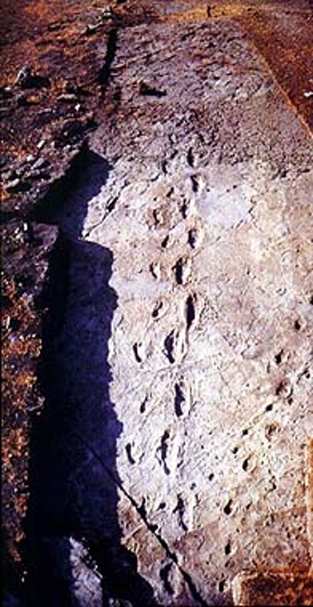
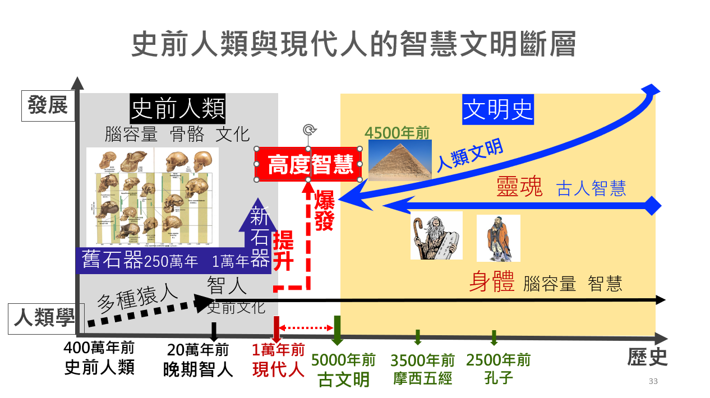

科學
科學
百萬年前的空谷足音
人類考古學家曾經在東非洲發現一處三百多萬年前二個人走過去的腳印( 如圖  )，推估與當時(約350萬年前)的南方猿人有關，如所發現的露西(Lucy)就是有名的化石代表。人類始祖不斷更新
2019年在自然雜誌刊登了在衣索匹亞研究人員發現了一具來自接近380萬年前的湖畔南方人猿頭骨，對這樣本進行分析之後，使人們對人類最初如何從猿類進化而來，又有了新的想法。史前人類出現時間及腦容量
從百萬年迄今，若將黑猩猩、大猩猩、史前人類及智人等依照腦容量大小及發現時間先後進行排列及比較，我們會發現史前人類的腦容量是漸漸增加的，但最後出現的智人腦容量並非是最大的，尼安德塔人的頭顱(腦容量1520cc)甚至比智人(1340cc)還大。史前人類與現代人
對生物演化學者來說：現代人是從史前人類演化而來的，而現代人在骨骼特徵上屬於二十萬年前出現的晚期智人，文化上則是近一萬年前屬於新石器時代及農業革命以後的人。生物學中的「人」與人類
在生物學分類有界、門、綱、目、科、屬、種，在靈長目下的人科、人屬、人種，雖然都是「人」(Homo)，但生物學分類名稱實與我們常說的「人類」名稱不同。在生物分類中的人科，包含：人屬、黑猩猩屬、大猩猩屬等；而當中的人屬，含括智人及史前人類等。有別於已全部消失的二十餘種史前人類，現代人是編列在人屬裡的智人種 (homo sapiens)，只有一種，且現今世界已有79億人。智人基因不同於史前人類
史前人類是人類的祖先嗎？史前人類與現代人都是人屬，卻是不同人種。若單從身體來看，從最早可能在400萬年前出現的史前人類骨骼已與智人相似，而腦容量逐漸增加，至20萬年前晚期智人已經與現代人相同。智慧文明開展自一萬年前 
一個人不是只有身體，還有靈魂的部分。我們從人類考古與歷史文化來看，人類生活型態明顯與其他生物不同。若說史前人類最早可追溯自250萬年前舊石器時代開始，直到近約一萬年前進入新石器時代。人類獲取糧食的方式由原始的狩獵採集模式進入農耕畜牧生活，這凸顯了人類生活與智慧文化的躍進與升級。從時間長度來看，250萬年(前)與一萬年(前)相較，簡直就是瞬間跳躍模式。從考古學家探勘的發現結果來看：
由現在反推歷史回去：
 聖經
聖經
從時間上來看
舊約聖經中的亞伯拉罕出現在西元前二千年，從亞當至亞伯拉罕共二十代也約二千年，因此，有學者推估亞當的誕生在至今約六千多年前。這個時間有意義嗎？比對人類考古及歷史演進，在距今五千至一萬年前間，人類智慧文明呈現有一個未知的爆發，人類文明史自此開啟及發展，產生了高度的古文明與思想智慧，並延續至今日。從地理上來看
舊約聖經創世紀中的亞當被安置在伊甸園中，創世記第二章所描述的伊甸園，可提供其地理位置的相關線索。雖然，今日地理條件已與當時有所不同。但是，伊甸園所記載的底格里斯河及幼發拉底河，正是考古發現人類最早的巴比倫古文明位置；而古實地(今日的衣索匹亞)，正是考古學上孕育非洲最早人類的搖籃。從智慧文明出現來看
從史前人類的生存軌跡到近一萬年前的文明發展，我們看到人類的高度智慧就在至今五千年前至一萬年前突然出現，這讓我們想到舊約聖經創世紀中所說的亞當，其出現的時間不也似乎就在這個時候嗎?